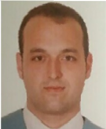

Soy una persona predispuesta a llevar a cabo cualquier reto que
se me presente en los proyectos que pueda participar.
Me apasiona trabajar en equipo ya que pienso que es la
forma de trabajar que más puede enriquecer las cualidades de un profesional. Mi especialidad son los SIG y poco a poco iniciándome en el mundo del desarrollo.
| Empresa/Organización | Cargo | Localización | Desde-hasta | Descripción |
| Apitecnic | Técnico GIS | Madrid | Octubre 2015 - Enero 2016 | Análisis espacial multivariable en la Sierra del Rincón para localizar actividades apícolas |
| Título | Entidad | Promoción |
| Máster GIS | ESRI España | 2017 |
| Geografía y Ordenación del Territorio | Universidad Complutense de Madrid | 2016 |
| Curso Socorrismo | Cruz Roja Española | 2013 |
Puedes encontrarme en los siguientes links: